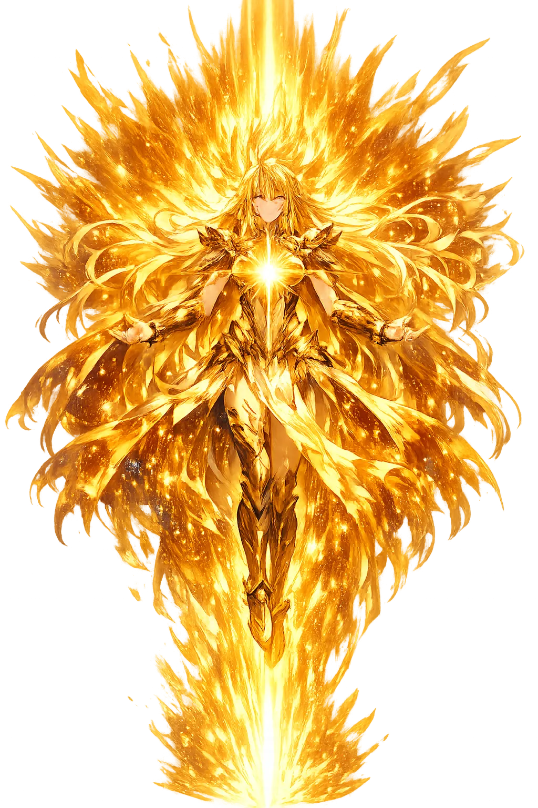

Stories of Archḗ
Archḗ has no traditional mythology. Its stories are philosophical: the search by Greek thinkers for the first thing, the ruling thing, the thing from which everything else can be understood.
In Miletus, in the early sixth century BCE, Thales declared that water is the archē — that all things come from water and return to it. Aristotle, our earliest reporter, guesses at his reasons (Metaphysics A 3, 983b6-27): the nourishment of all things is moist; heat itself lives from moisture; the seeds of all beings are wet; and the earth — imagined floating on the river Oceanus — must rest on water as wood does. Later doxography (Simplicius) credits him with measuring pyramids by their shadows and predicting a solar eclipse. Whether or not water was his considered doctrine, the declaration itself was revolutionary: Thales asked not what happened first but what everything depends on — and answered with a substance anyone could see, not a god anyone must fear. The question he posed, unanswerable as stated, is the one Western philosophy has never stopped asking.
Thales' pupil Anaximander objected, in effect, that water cannot be the archē, because the elements wrong their opposites: if fire is made from water's enemy, one first principle must have injured another — and injustice among origins is impossible. His solution, preserved in the one surviving sentence of early Greek prose (DK 12B1), was the apeiron, the boundless: 'from which come to be all the heavens and the worlds in them,' and into which all things perish, 'for they give justice and reparation to one another for their injustice according to the ordering of time.' Aristotle (Physics Γ 4, 203b7-15) records the properties tradition gave it: immortal, indestructible, all-encompassing. It is a staggering move — the origin is not any thing but the unlimited field in which things arise and to which, by cosmic law, they repay what they took. Anaximander's fragment contains, in one breath, physics, ethics, and the first recorded use of the language of justice to describe nature.
Heraclitus of Ephesus, around 500 BCE, made the archē not a stuff but a process: 'this cosmos, the same for all, no god nor man made, but it always was and is and shall be an ever-living fire, kindled in measures and in measures going out' (DK 22B30). Fire is his chosen emblem because it is pure transformation — fuel becomes flame becomes smoke — so that what persists is not matter but measure, the logos that governs each exchange. All things, he says, are an exchange for fire, as goods are for gold (B90), and the one thing that steers all things through all things is the thunderbolt (B64). Later doxographers grumbled that fire, of all things, is the least stable; Heraclitus would have answered that this is precisely its qualification. Where Thales sought a material ancestor and Anaximander a neutral field, Heraclitus found the archē in change itself — a first principle that is not a thing but a law of transformation, and the nearest ancient ancestor of modern conservation principles.
The question outgrew the Presocratics. In the Timaeus (48e-52d) Plato added a third kind beside forms and their copies — the chōra, the 'receptacle' or space, formless itself yet the archē in which all becoming is inscribed, the 'nurse of all becoming.' Aristotle then closed the Presocratic program by reducing the archai to a small set: matter, form, the moving cause — and, in Metaphysics Λ (1071b-1073a), a first cause that is itself unmoved, 'thought thinking itself,' on which the heavens and nature depend. Whether or not the unmoved mover is a god, the structure became the template for two millennia: Aquinas' five ways are, in form, a search for archai, and every later 'first cause' argument in Western thought walks the same road. The Greek hunt for water, air, and fire thus ends, unexpectedly, in theology and physics at once. The Presocratics' oldest question — what comes first? — survived intact into every modern science that opens with axioms and every metaphysics that ends in a first principle.
Origin, Rule, Sovereignty
Archḗ is the Greek word for beginning, origin, and rule. For philosophers it names the first principle from which all things derive; for political thinkers it names legitimate authority. It is a concept so central that Western thought still builds on it.
For the Presocratics, the archē is water, air, fire, or the boundless from which all things come.
The same word means 'rule' or 'office'; origin and authority are inseparable in Greek.
In Orphic and Neoplatonic thought, archē names the ultimate source of the cosmos.
Every discipline seeks its archē: the axiom, cause, or origin from which it proceeds.
From the original script to the living URL
Ἀρχή
The name in its original Greek form. Archḗ (Ἀρχή) is attested in the source tradition — “Beginning, origin, rule”. Its aspirated consonants, long vowels, and acute accents carry the full phonetic and orthographic weight of the source tradition.
arche
Reduced to plain arche, the name loses everything that made it specific: aspirated consonants, long vowels, and acute accents. What remains is an ASCII string that machines can parse but that no longer speaks with its original voice.
Archḗ
The Unicode restoration recovers what ASCII flattened. Archḗ restores aspirated consonants, long vowels, and acute accents, returning the name to its original written dignity. The domain encodes to Punycode, but the browser displays the truth.
Archḗ.com → xn--arch-j64a.com
The non-ASCII characters in Archḗ are encoded while the ASCII remains visible. To the DNS, it is Punycode. To humanity, it is Archḗ.
Owned, ideal, and ASCII forms of Archḗ
Archḗ
Restores Ἀρχή. The live temple domain — archḗ.com.
arche
Flattens Ἀρχή. The plain ASCII fallback — what DNS and legacy systems see.
How Archḗ was spoken
How Archḗ is preserved in writing
A bespoke provenance study for Archḗ is being prepared by the PUNICODEX scholarly team.
Contribute scholarly provenance →Archḗ is the question that never stops being asked. What comes first? What rules? What makes everything else possible? Every civilization answers differently — water, fire, air, God, energy, information — but the form of the question is Greek.
Enter Extended Lore